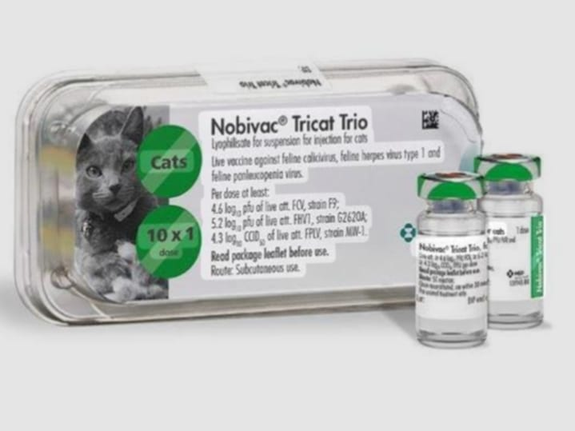
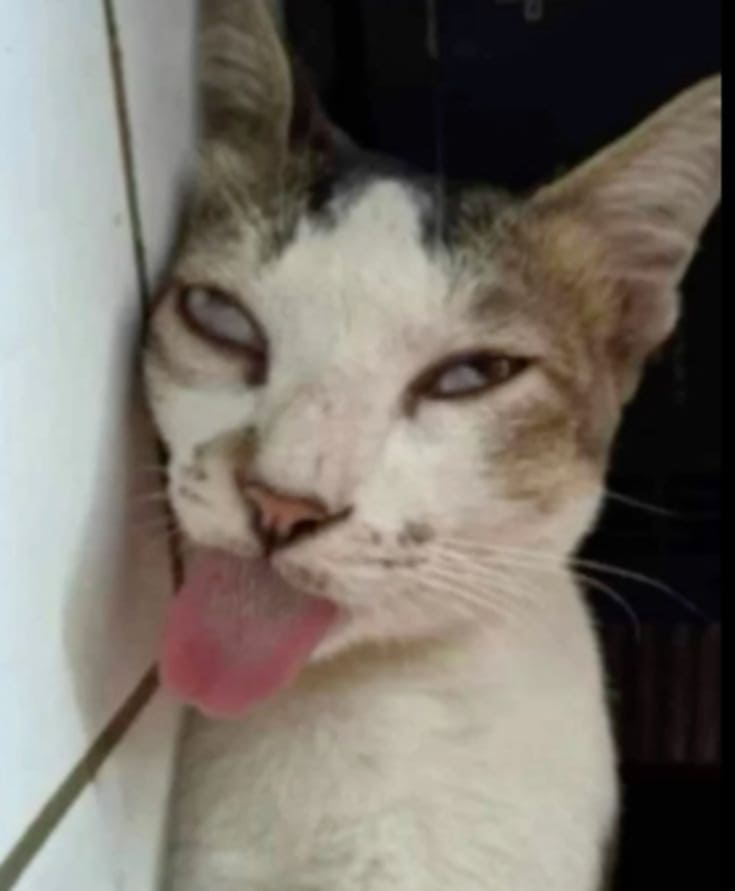
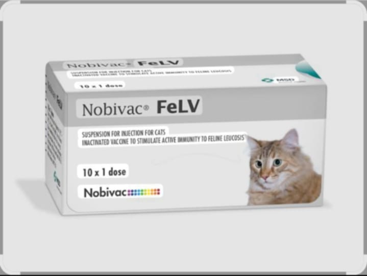

ພະຍາດຫັດແມວ
FELINE PANLEUKOPENIA
+ feline panleukopenia ເປັນພະຍາດຫັດແມວທີ່ຕິດຕໍ່ຮຸນແຮງ ມັກເກີດກັບແມວນ້ອຍ ຫຼື ແມວທີ່ຍັງບໍ່ເຄີຍໄດ້ຮັບວັກຊີນ ມັນເຂົ້າໄປທຳລາຍລະບົບພູູມຄຸ້ມກັນ, ເມັດເລືອດຂາວຂອງແມວ ແລະ ລຳໄສ້
ເຮັດໃຫ້ແມວຕິດເຊື້ອແຊກຊ້ອນໄດ້ງ່າຍ ຕິດຕໍ່ແຜ່ພັນໄດ້ຈາກການສຳພັດກັບນ້ຳລາຍ, ປັດສະວະ, ອາຈົມ, ສິ່ງຂອງປົນເປື້ອນ ເຊັ່ນ ຊາມອາຫານ, ຖັງຊາຍແມວ.
+ ອາການຫຼັກ : ອາການທົ່ວໄປແມ່ນ ໄຂ້ສູງ, ຊືມ ເບື່ອອາຫານ,
ທ້ອງເສຍຮຸນແຮງ ເຊິ່ງບາງທີມີເລືອດປົນມານຳ ພາວະຊ໊ອກ ແລະອາດຈະຕາຍກະທັນຫັນ
ວັກຊີນພະຍາດຫັດແມວ
ໂດຍທົ່ວໄປແລ້ວ ວັກຊີນປ້ອງກັນພະຍາດນີ້ ຈະລວມຢູ່ໃນວັກຊີນລວມຂອງແມວ ທີ່ເອີ້ນວ່າ ວັກຊີນລວມສາມໂລກ (FVRCP)
ລວມມີ :
- FHV1 _ feline herpesvirus(ຫວັດແມວຈາກໄວລັສ ເຮີ້ປິດ)
- FCV _ feline calicivirus (ຫວັດແມວອີກຊະນິດຫນື່ງ)
- FPV _ feline panleukopenia (ພະຍາດຫັດແມວ)
ມີລັກສະນະເປັນນ້ຳ ຫຼັງສີດວັກຊີນແລ້ວ ຈະມີຜົນເລັກນ້ອຍ ເຊັ່ນ ຊືມ, ເບື່ອອາຫານ ແຕ່ອີກ2-3 ມື້ກໍຈະເປັນປົກກະຕິ ມີໄລຍະຄຸ້ມກັນພະຍາດປະມານ 1ປີ, ຄວນໄດ້ຮັບວັກຊີນຕາມຊ່ວງເວລາຢ່າງສະໝ່ຳສະເຫມີ ສັກໃຫ້ແມວທີ່ອາຍຸ 8 ອາທິດຂື້ນໄປ

+ ວິທີໃຊ້ :
ສັ່ນໃຫ້ລະອຽດກ່ອນໃຊ້ ພາຍຫຼັງເປີດໃຊ້ແລ້ວ ຄວນໃຊ້ໃຫ້ໝົດພາຍໃນ 2 ຊົ່ວໂມງ ສັກໄປທີ່ໃຕ້ຜິວໜັງ(ຫຼັງຄໍ)
+ ການເກັບຮັກສາ :
ຮັກສາໄວ້ໃນອຸນຫະພູມ 2-4 ອົງສາເຊ ກຸ້ມໄດ້ 1ປີ
+ ຂໍ້ແນະນຳ
- ສຳຫຼັບໄກ່ນ້ອຍຫຼັງຈາກໄດ້ຮັບວັກຊີນໄປແລ້ວ ບາງຄັ້ງຄາວອາດຈະເກີດມີອາການລະບົບຫາຍໃຈບໍ່ສະດວກ ແຕ່ທ່ານບໍ່ຕ້ອງຕົກໃຈໄປ ເພາະອາການນີ້ຈະເປັນປະມານ 1-2ມື້ ກໍຈະກັບສູ່ສະພາວະປົກກະຕິ.
- ຫ້າມສັກໃຫ້ສັດທີ່ບໍ່ແຂງແຮງ ອ່ອນເພຍ ຫຼື ປ່ວຍຢູ່ແລ້ວ.
- ຫ້າມບໍ່ໃຫ້ເອົານ້ຳເຫຼົ້າ ຫຼື ນ້ຳຢາຂ້າເຊື້ອອື່ນໆ ເຊັດບ່ອນທີ່ກ່ອນສັກ ແລະ ຫຼັກສັກ ຖ້າຢາກຈະເຊັດກ່ອນແທ້ໆ ຈຳເປັນຕ້ອງໄດ້ໃຊ້ນ້ຳເກືອສະອາດ ຫຼື ນ້ຳສະອາດບໍລິສຸດເຊັດ.
- ຈົງດູແລ ເບິ່ງແຍງສັດຂອງທ່ານໃຫ້ດີ ຖ້າສັດເກີດເປັນພະຍາດມາ ຈັບແຍກທັນທີ ແລ້ວໃຫ້ຢາ(ທີ່ບໍ່ແມ່ນວັກຊີນ) ຕາມສັດຕະວະແພດແນະນຳ.
ພະຍາດ ລູຄີເມຍ
FELINE LUEKEMIA VIRUS

+ feline leukemiaເປັນພະຍາດທີ່ເກີດຂື້ນກັບແມວ ໂດຍຈະເຮັດໃຫ້ແມວພູມຄຸ້ມກັນຕ່ຳ ຕິດເຊື້ອແຊກຊ້ອນໄດ້ງ່າຍ ແລະ ອາດກໍ່ໃຫ້ເກີດພະຍາດເມັດເລືອດຂາວ ຫຼື ລູຄີເມຍ
ກົນໄຂຂອງພະຍາດກໍຄື ພະຍາດຈະເຂົ້າໄປສູ່ໄຂກະດູກ ເຮັດໃຫ້ການສ້າງເມັດເລືອດຜິດປົກກະຕິ ດ້ວຍທີ່ວ່າ ພະຍາດນີ້ເປັນພະຍາດທີ່ກ່ຽວກັບລະບົບພູມຄຸ້ມກັນແລະເມັດເລືອດ ແມວແຕ່ລະຕົວມັກຈະຄ່ອຍໆ
ສະແດງອອກຢ່າງຊ້າໆ ສາມາດຕິດຕໍ່ກັນໄດ້ງ່າຍ ທາງນ້ຳລາຍ, ການເລຍກັນ, ທາງເລືອດ, ແລະ ແມ່ສູ່ລູກອາການເລີ່ມຕົ້ນ: ຊືມໆ, ເບື່ອອາຫານ, ມີໄຂ້ເປັນໄລຍະ, ຕ່ອມນ້ຳເຫຼືອງໃຫຍ່, ເຫືອກຊີດເກີດຈາກພາວະເລືອດຈາງ, ທ້ອງເສຍ ຫຼື ອາຈຽນ. ອາການໃນໄລຍະຕໍ່ມາ
(ໄລຍະລຸກລາມເຮື້ອຮັງ) : ພູມຄຸ້ມຖືກທຳລາຍໝົດ ຕິດເຊື້ອອື່ນແຊກຊ້ອນໄດ້ງ່າຍ ກໍ່ໃຫ້ເກີດມະເລັງເມັດເລືອດຂາວ ພາວະເລືອດຈາງຮຸນແຮງ ແລະ ຕາຍໃນທີ່ສຸດ
1.ວັກຊີນປ້ອງກັນ ແບບຜົງ (FeLV)
+ ຂໍ້ແນະນຳ : ໃຊ້ປ້ອງກັນພະຍາດລູຄີເມຍ, ຕ້ອງໄປກວດເລືອດກ່ອນທີ່ຈະໃຫ້ວັກຊີນນີ້ ສັກໃຫ້ກັບແມວທີ່ອາຍຸ 9ອາທິດຂື້ນໄປ ໃຫ້ເຂັມລະ 1 ມລ / ຕົວ.
+ ວິທີໃຊ້ :
- ຂື້ນກັບແກ້ວບັນຈຸ ຖ້າແກ້ວບັນຈຸ 10ເຂັມ("ເຂັມ"ແມ່ນ ປະລິມານວັກຊິນທີ່ໃຊ້ກັບສັດປີກ ເຊັ່ນ 100ເຂັມ=100ຕົວ) ໃຫ້ປະສົມກັບນ້ຳກັ່ນ(ນ້ຳເກືອສະອາດ)10 ມລ. ສັ່ນໃຫ້ລະລາຍດີກ່ອນໃຊ້.
- ສັກໃສ່ໃຕ້ຜິວໜັງ ສັນຄໍ ພາຍຫຼັງປະສົມນ້ຳຢາແລ້ວ ຄວນໃຊ້ໃຫ້ຫມົດພາຍໃນໄລຍະເວລາ 2 ຊົ່ວໂມງ.
+ ໄລຍະຄຸ້ມກັນ : ຫຼັງຈາກແມວໄດ້ຮັບວັກຊີນແລ້ວ ຈະມີໄລຍະຄຸ້ມກັນ 1 ປີ>
+ ການເກັບຮັກສາ : ເກັບໄວ້ໃນທີ່ມືດ ເຢັນ ອຸນຫະພູມ 2-4 ອົງສາເຊ ກຸ້ມໄດ້ 1 ປີ.

ເພີ່ມເຕີມ
- ຫ້າມສັກໃຫ້ສັດທີ່ບໍ່ແຂງແຮງ ອ່ອນເພຍ ຫຼື ປ່ວຍຢູ່ແລ້ວ.
- ຈົງດູແລ ເບິ່ງແຍງສັດຂອງທ່ານໃຫ້ດີ ຖ້າສັດເກີດເປັນພະຍາດມາ ຈັບແຍກທັນທີ ແລ້ວໃຫ້ຢາ(ທີ່ບໍ່ແມ່ນວັກຊີນ) ຕາມສັດຕະວະແພດແນະນຳ ຫຼື ພານ້ອງໄປຄີນິກສັດໃກ້ບ້ານທ່ານ.